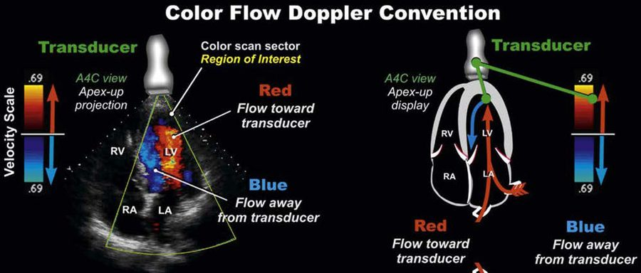
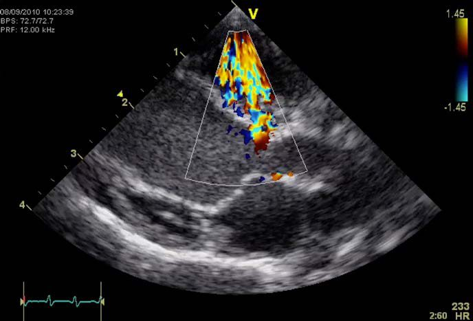

第 13 / 18 節 · 原始講義：Color Flow Doppler Echocardiography
🌈 彩色都卜勒基本觀念
彩色都卜勒本質上是一種脈衝波都卜勒，把偵測到的血流速度與方向以顏色編碼疊加在 2D 影像上。三種都卜勒模式：脈衝波（PW）、連續波（CW）、彩色血流（Color-Flow）。
🌈
馬賽克花色
亂流（turbulence）— 常見於瓣膜逆流、狹窄、分流
顏色會隨探頭角度改變：同一股收縮期血流從 LV 流向主動脈，若從緊貼胸骨的右側切面看是朝探頭（紅色），但從左心尖切面看則是遠離探頭（藍色）——顏色代表的是相對於探頭的方向，不是絕對的解剖方向。色彩深淺（由暗到亮）代表流速快慢，顏色種類由 PRF 設定決定顯示的速度量尺。
🎛️ 彩色都卜勒控制項
🖼️
Color Box 大小
彩色取樣框越寬 → 影像更新率越低；框越長（越深）→ PRF 降低、色彩速度量尺跟著降低
📶
Color Gain
每次檢查先把增益調高到滿版都是雜訊像素，再慢慢調低直到雜訊剛好消失——這是最快找到正確增益的方法
〰️
PRF（Pulse Repetition Frequency）
Nyquist limit = 1/2 × PRF；心臟內血流速度快，需要較高 PRF 設定才不易 aliasing
最佳 PRF 判斷：彩色訊號應完整填滿正常血管或腔室、但不出現不必要的亂流色彩（約 > 0.8 的填滿比例為佳）；PRF 若已達上限仍嫌過低，可改用較低頻率探頭、調降探頭 MHz、或改用需要較少深度的切面。
Aliasing（彩色版本）：當都卜勒頻移超過 Nyquist limit，顏色會從一種顏色的深色調直接跳到另一種顏色的淺色調（例如亮紅色直接變成亮藍色），造成判讀混淆——原理與頻譜都卜勒的 aliasing 相同。
低流速情境：若彩色框內顏色填充不足（例如懷疑小型 PFO／心房中膈缺損時），可將色彩速度量尺調低（例如降到 40 cm/s），有助於顯示原本被遮蔽的低速分流訊號。
🔍 各瓣膜正常與病理血流型態
💗
二尖瓣
正常流入為層流；二尖瓣狹窄呈現加速的窄束血流；二尖瓣逆流則在收縮期於 LA 內出現逆向亂流噴射
🫀
三尖瓣
正常流入層流 vs 三尖瓣逆流於 RA 內出現收縮期亂流噴射
🫁
肺動脈瓣
正常收縮期層流 vs 肺動脈瓣狹窄的加速窄束血流，+/- 舒張期肺動脈瓣閉鎖不全逆流
🅰️
主動脈瓣
正常收縮期層流 vs 主動脈瓣下狹窄的加速血流，+/- 舒張期主動脈瓣閉鎖不全逆流
🔀 分流的彩色都卜勒偵測位置
彩色都卜勒是尋找先天性分流（PDA、VSD、ASD）與瓣膜狹窄（肺動脈瓣、主動脈瓣下、二尖瓣、三尖瓣狹窄）最快速的篩檢工具——建議每次檢查都常規掃過每個瓣膜與中膈構造，異常的馬賽克花色亂流通常是發現病灶的第一線索，之後再用 CW 都卜勒精確測量流速與壓力差。詳細分流解剖位置與病理生理請見第 6 節。
📷 原始講義圖例
下列為原始 ESAVS 講義中的實際截圖／圖表，版權屬 Dr. Gerhard Wess 所有，僅供內部學習參考，請勿另行公開散布。

彩色都卜勒方向判讀原則圖解:紅色朝向探頭、藍色遠離探頭

瓣膜逆流的彩色都卜勒亂流(馬賽克花色)實際影像